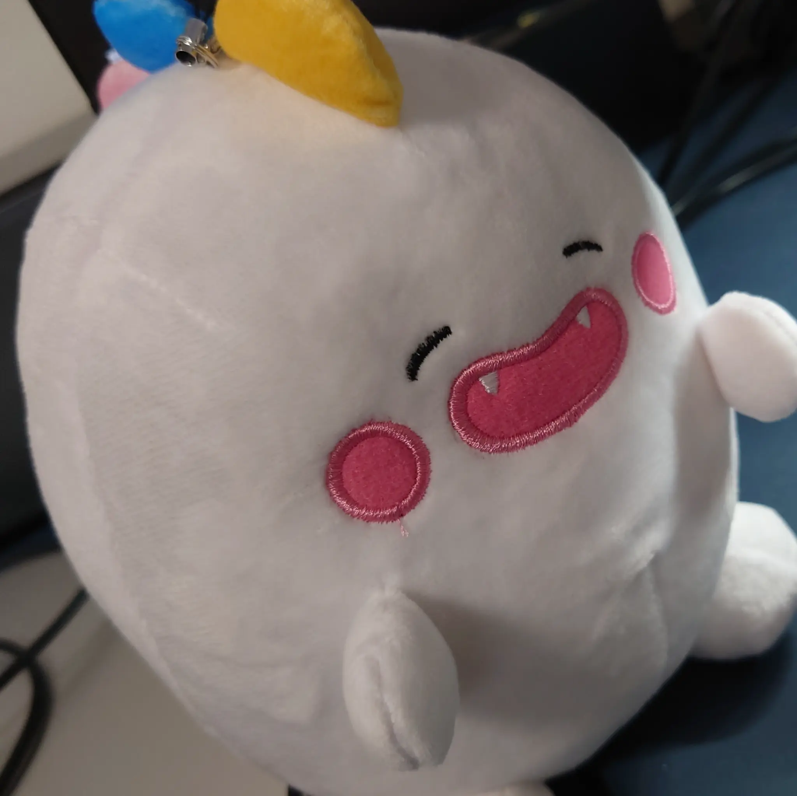

@mistakemrkanime
仕事では主にC/C++を使っています。趣味のプログラミングや興味を持った技術を、少しずつ学びながら形にしていきたいと思っています。
仕事ではシステムソフトウェアの開発に携わっています。GitHubでは、趣味で試したことや学んだことを少しずつ残していく予定です。
アニメやゲームが好きです。特に、青春、部活動、音楽や創作をテーマにした作品をよく観ています。物語だけでなく、演出、音響、演技、制作背景にも注目して楽しんでいます。
パソコンとの出会いから、プログラミングに興味を持った頃までの歩みを年表形式でまとめました。